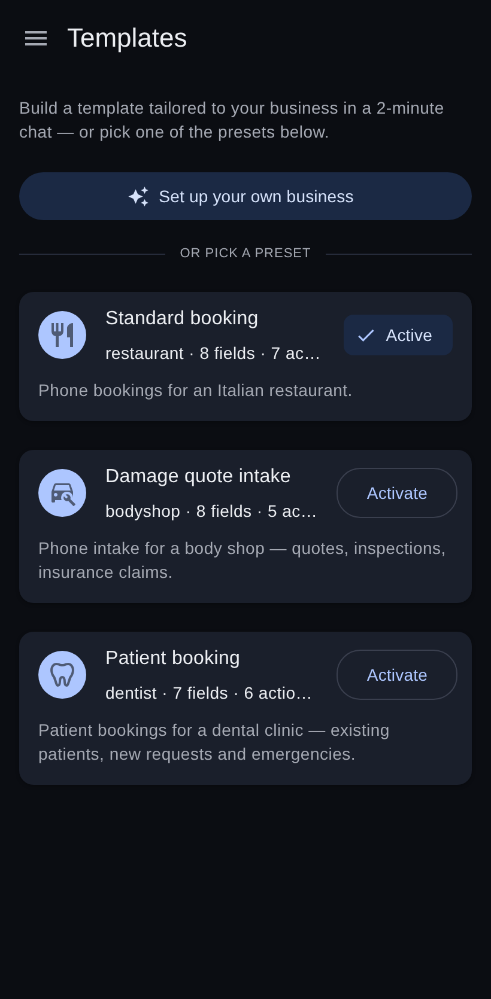
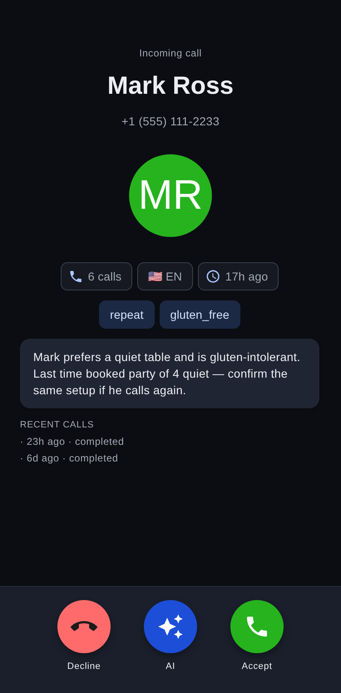
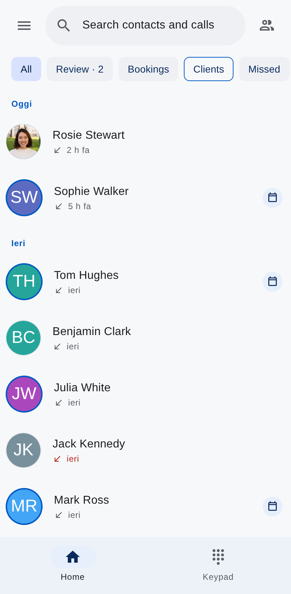
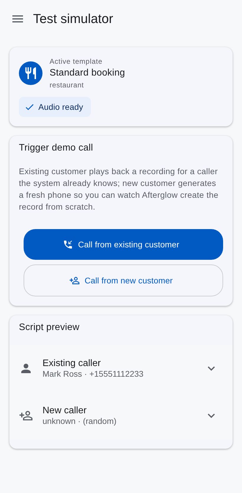

1 · Self-correction on tool errors
Turn N: booking.create →
validation_failed
party_size required.
Turn N+1: re-read transcript, re-emit with party_size=4 →
executed. Hard cap: 2 attempts per action.
/v1/chat/completions/RAG · MiniMax-M2.7 over the preseeded collection
Turn N: booking.create →
validation_failed
party_size required.
Turn N+1: re-read transcript, re-emit with party_size=4 →
executed. Hard cap: 2 attempts per action.
The agent decides whether to spend tokens on the Vector Store — and asks specific questions ("allergies on file?"), not catch-all queries. First-time caller: skip entirely.
finalize → completed.
max_turns → needs_review (first-class terminal,
surfaced in the UI). error → failed.
No silent fallback.
Each turn → one audit row. Action results joined on
payload.agent_turn (integer, not timestamps). The
Agent Reasoning Trail is a first-class UI surface, not a buried log.
/admin/rag-probe returns real input_tokens — billed on every call.
main/api/v1/admin/rag-statssearch_transcript + read_transcript_segment| Them | Afterglow | |
|---|---|---|
| Where the AI lives | On the call | After the call |
| Who picks up | AI voice agent | The human |
| Memory across calls | Transcript log | Briefing + RAG |
| Agent reasoning | — | First-class UI |
| Vertical adaptation | Reseller config | 2-min wizard |
| Geo model | Country-specific | Single-tenant · worldwide |
input_tokens per query — verifiable live via /api/v1/admin/rag-probe.customer.update_profile mutates the row, undoable ·
Speechmatics TTS Preview generates every bundled and wizard MP3.
The outbound write-side integrations no public, multi-judge demo can safely fire. They have a typed contract; we just don't execute them against third parties during the hackathon.
booking.*
whatsapp.*
sms.*
email.*
calendar.*
payment.*
crm.*
review.*
RAG write-back (demo only)
action_catalog.py + an env var. Not an architecture
migration. The agent loop, the RAG, and the single-tenant
deployment are production-ready today.
X-Demo-Session isolates concurrent judges. Drawer → Settings → Reset demo wipes your sandbox.


